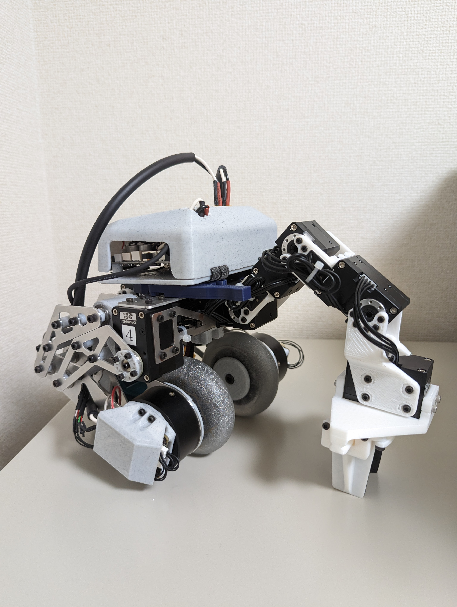

このページ / REFYGOのtwitter / hatoのtwitter で進捗を更新します．
MFT2023に無事出展できました． wheeled-bipedal robotの他に私が過去に製作した二脚ロボットと，hato君が製作した4脚ロボット，独立差動ステア機構を展示しました． 来ていただいた方ありがとうございました．
MFT2023出展選考を通過することが出来ました．ありがとうございます． また，hato君から8月上旬に機体のver. 2を受け取り，とりあえず配線，通電チェックを終わらせました． 制御や配線を綺麗にするのはこれからです．
MFT2023にマニピュレータ付Wheeled-bipedalを出展申し込みする予定です． もし出展選考を通過することができたらこのページ/REFYGOのtwitter/ hatoのtwitter で進捗を更新します． 現在ハードウェア面ではver. 1が完成，制御面ではシミュレーター上での倒立振子やマニピュレータの制御の実装が完了しています． 今後はハードウェアと制御の統合を行い，実機で検証予定です．